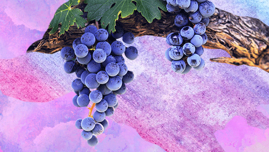

01
와인 종류
02
제조 과정
03
어울리는 요리
01
와인 종류
레드 와인
포도열매를 으깨서 제조
화이트 와인
청포도 또는 알맹이의 과즙만 추출해서 제조
로제 와인
레드와 화이트를 섞거나 흑포도와 청포도를 섞어서 제조
스파클링 와인
발효 시 발생되는 기포를 모아서 제조
02
제조 과정
- 
01. 포도수확 & 분리
평균기온 10 ~ 20도 정도의 서늘한 기온에서 재배한 포도를 수확한 후 수확한 포도의 줄기와 대를 분리시킵니다.
02. 1차 발효
화이트 와인은 포도즙에서 껍질과 씨를 분리시켜 발효를 진행하고, 레드 와인은 포도즙과 껍질, 씨등을 함께 발효조에 넣어 발효합니다.
03. 압착
화이트 와인의 경우 포도 껍질과 씨를 분리시키기 위해 압착한 다음 포도즙만 발효시키고, 레드와인은 껍질, 과육, 씨와 함께 발효한 후 자연스럽게 얻어진 포도즙을 제외하고 압착합니다.
04. 2차 발효
압착된 포도즙과 자연 유출된 포도즙을 합쳐 오크통이나 스테인라스 스틸통에서 2차 발효를 시킵니다.
05. 블랜딩
똑같이 숙성이 끝난 와인이라 해도 각 통마다 환경이 조금씩 달랐기 때문에 약간의 맛의 차이가 존재합니다. 이것을 보완하기 위해 블랜딩 마스터에 의해 여러 통들의 와인을 섞습니다.
06. 여과 & 숙성
앙금 가라앉히기 과정으로 맑게 하고, 잡균과 침전물을 제거하는 안정화 처리과정을 거칩니다. 병에 담고 숙성시키면 와인을 한층 안정시키며 거친 맛을 최소하합니다.
03
어울리는 요리
레드 와인
쌉싸름한 레드 와인은 향이 강한 이탈리안 요리 또는 씹는 맛이 있는 고기류와 어울리는 편입니다.

화이트 와인
화이트 와인은 맛이 순하고 상큼한 편으로, 가벼운 음식이나 생선요리에 잘 어울립니다.
로제 와인
단맛과 신맛이 어우러진 로제와인은 메인 메뉴보다 가벼운 에피타이저에 잘 어울립니다.
스파클링 와인
드라이 스파클링은 주로 식전 에피타이저에, 스위트 스파클링은 주로 디저트와 함께 먹습니다.